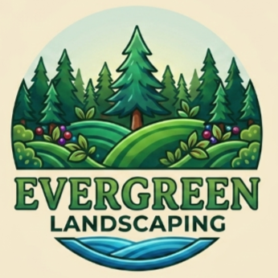

Professional Landscaping Solutions for Every Outdoor Space At Evergreen Landscaping, we offer a range of professional landscaping and garden maintenance services designed to keep your outdoor space beautiful, healthy, and functional.
Bring your dream garden to life with a customised landscaping design. We work with you to
understand your style, preferences, and requirements before creating an outdoor space that
complements your property.
Our garden design services may include:
A healthy lawn can completely transform the appearance of your property. Our lawn services help create
and maintain a lush, attractive outdoor space.
Our services include:
Healthy and well-maintained trees and hedges add beauty, privacy,
and structure to your garden. Our team can help maintain your greenery throughout the year.
Our services include:
Keep your garden healthy with an effective irrigation solution.
We can assist with irrigation planning, installation, and maintenance to
help ensure your plants receive consistent and efficient watering.
Our services include:
Give your garden a fresh and tidy appearance with
our professional garden clean-up services
Our services include:
No project is too big or too small. Contact Evergreen Landscaping today to discuss your landscaping needs and discover how we can help bring your vision to life.